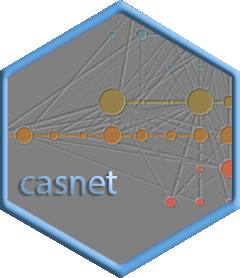

casnet: An R toolbox for studying Complex Adaptive Systems and NETworks 
A collection of analytic tools for studying signals recorded from complex adaptive systems or networks:
- (Cross) Recurrence Quantification Analyses (Continuous and Categorical (C)RQA, Chromatic RQA, Anisotropic RQA)
- Fluctuation Analyses (DFA, PSD slope, SDA, Multifractal DFA, Wavelet Singularity Spectrum)
- Network based time series analyses and visualisation (Recurrence Networks, spiral graphs)
- Multivariate (network based) time series analyses (Dynamic Complexity, Multiplex Recurrence Networks)
Installing casnet
As soon as it is published on CRAN, install the latest stable release of casnet using utils::install.packages(casnet, dependencies = TRUE).
Development version
Either use devtools::install_github or remotes::install_github
library(devtools)
install_github("FredHasselman/casnet")
library(remotes)
install_github("FredHasselman/casnet")Vignette build failing?
If building the vignettes fails on installation (using build_vignettes = TRUE), just omit the argument and find them at online as Articles or locate the vignettes in the inst/docs/ folder of the repository.